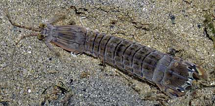
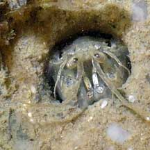
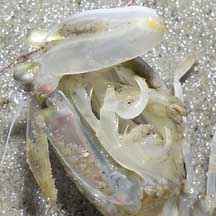
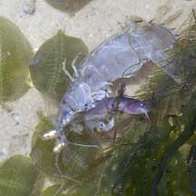
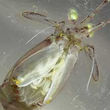
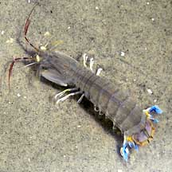
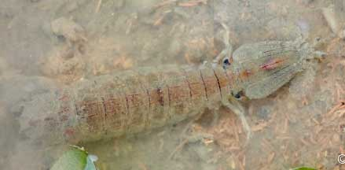
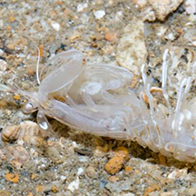

|
|
| mantis shrimps text index | photo index |
| Phylum Arthropoda > Subphylum Crustacea > Class Malacostraca > Order Stomatopoda |
| Spearer
mantis shrimp awaiting identification Family Squillidae updated Mar 2020 Where seen? This energetic shrimp-like animal is often seen on our Northern shores, especially among seagrasses. It is more active at night. Features: 6-10cm long. Body broad and long, colour plain grey or beige with fine dark bars and lines. Broad tail that have spiky edges and a pair of paddle-shaped appendages. Some have colourfully marked tails. The huge front pincers resemble those of the Praying mantis insect or the blade of a pocket knife that folds into the handle. Armed with sharp spines, the pincers extend and retract much faster than an eye blink and the sharp spines impale soft, fast-moving prey like fish and prawns. Many different species seen in Singapore of the Family Squillidae look similar and are hard to distinguish in the field. Status and threats: Our mantis shrimps are not listed as endangered. However, like other creatures of the intertidal zone, they are affected by human activities such as reclamation and pollution. |
 Changi, Jun 10 |
 This is all that is usually seen of a mantis shrimp in its burrow. Changi, Jul 04 |
|
 All kinds of scary predatory claws on the underside. Chek Jawa, Feb 06 |
 This one caught a little fish! Changi, Jul 07 |
 Deadly pincers Changi, Jul 05 |
*Species are difficult to positively identify without close examination.
On this website, they are grouped by external features for convenience of display.
| Spearer mantis shrimps on Singapore shores |
On wildsingapore
flickr
|
| Other sightings on Singapore shores |
 Chek Jawa, Apr 02 |
 East Coast (PCN), May 21 Shared by Vincent Choo on facebook.. |
 |
Links
|